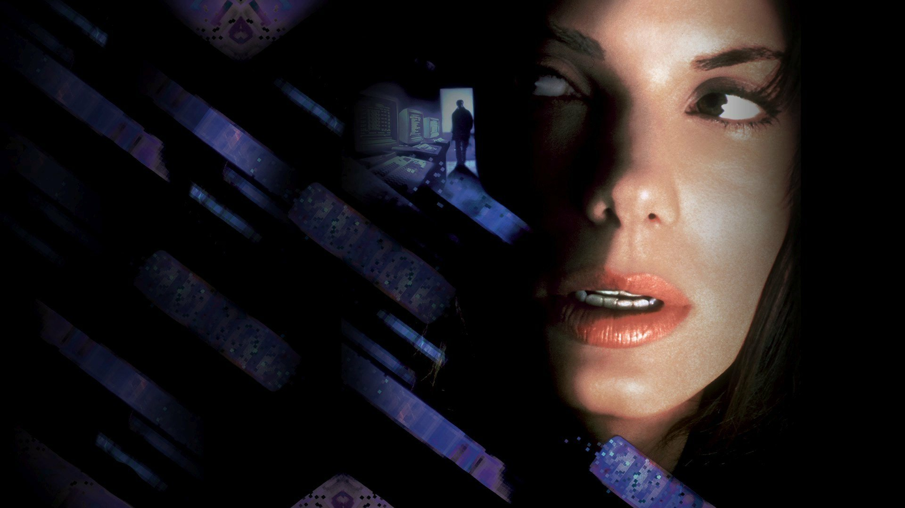

How I Fell in Love With AI
Long before AI tools were a part of normal every day life, I got my first taste of the future from a movie scene that stayed with me.

Inspiration: The Net (1995)
In 1995, I watched The Net. There is a moment where she clicks and orders pizza. It felt like magic. Not the pizza. The idea.
I remember thinking, “One day we will do everyday things instantly, from anywhere, like the computer understands what we want.”
That scene became a quiet goal. I did not know what the technology would be called. I just knew I wanted to live long enough to see it.
Now we have tools that can write, search, reason, and build. The future is not perfect, but it is here.